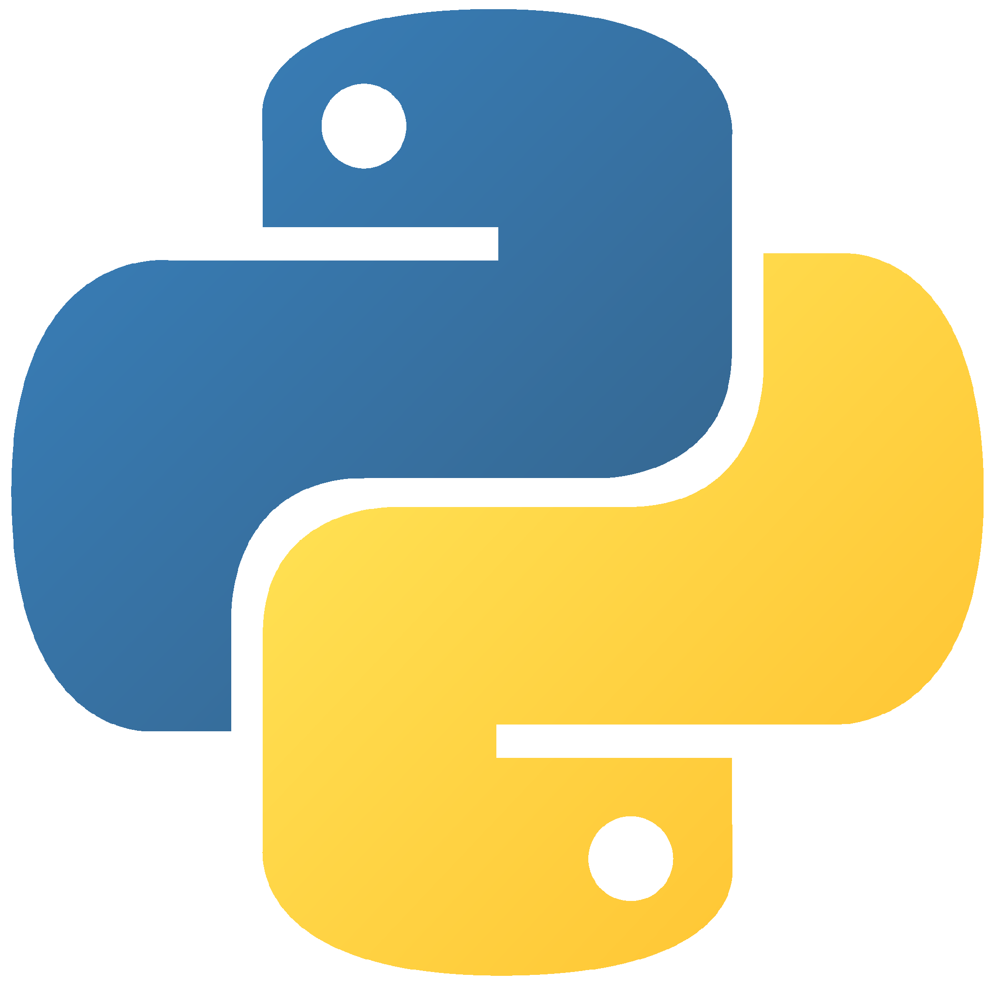
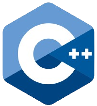
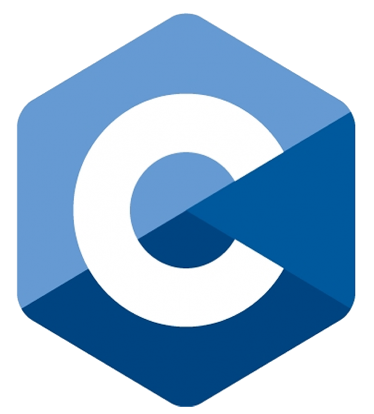

Mon apprentissage et mes connaissances :
Apprentissage général de l'informatique
Apprentissage du langage de programmation Python

J'ai suivi sur la plateforme Youtube la série "Apprendre le Python" réalisée par Graven. J'ai suivi les cours jusqu'à l'épisode 12 inclus. J'ai aussi appris à utiliser les bibliothèques PyQT (pour des interfaces graphiques), Flask (pour des applications Web), Socket (pour gérer des connexions réseaux) ainsi que Paramiko (pour des connexions SSH).
Une grande partie de mes projets contient du Python, c'est avec ce langage que j'ai appris le scripting.
Apprentissage du langage de programmation C++

J'ai suivi sur la plateforme Youtube la série "C++ - cours" réalisée par FormationVidéo. J'ai suivi les cours jusqu'à l'épisode 21 inclus.
J'ai moins de projets réalisés avec ce langage car il est plus complexe que Python et nécessite plus de temps pour l'apprentissage de chacune de ses notions. Vous pouvez néanmoins trouver un programme intéressant dans la catégorie : "Projets informatique" et un autre dans la catégorie : "Projets Sécurité".
Apprentissage du langage de programmation C

J'ai appris le C d'abord par moi-même avec un guide puis grâce à un professeur de mon école.
J'ai moins de projets réalisés avec ce langage car il est plus complexe que Python et nécessite plus de temps pour l'apprentissage de chacune de ses notions. Les quelques projets en C sur lesquels j'ai travaillé sont des projets d'école, notamment au club robotique.